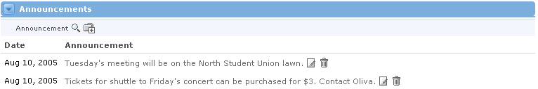

- displays an interface for the adding of a new announcement to the current offering.
- displays an interface for the adding of a new announcement to the current offering.
The Announcement Channel displays announcements associated with the current offering. Announcements are used to publicly broadcast messages to anyone viewing the offering. Each announcement is paired with the date that it was created and shows the announcement message. If the user possesses the proper permissions, announcements may also be added, edited, and deleted from the offering.

- displays an interface for the adding of a new announcement to the current offering.
From the main view, a user can select an announcement from the list:
 - displays an interface for the editing of the selected announcement.
- displays an interface for the editing of the selected announcement.
 - deletes the selected announcement.
- deletes the selected announcement.